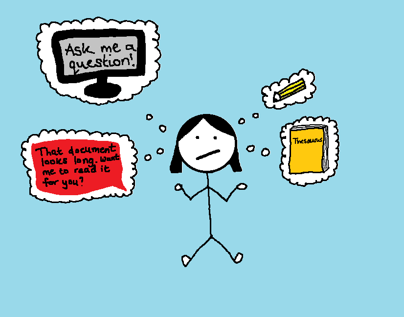

Like everyone else, I increasingly find myself wondering about artificial intelligence (AI). Recently, I listened to a podcast where the expert speaker encouraged women in all industries to actively embrace AI so as not to fall behind, as has been observed historically in the tech industry.1 As a Freelance Medical Writer, I am yet to find a way to reliably integrate AI into my day to day, beyond using ChatGPT to occasionally synonymise my sentence for inspiration, essentially reducing it to a glorified talking thesaurus.
Nevertheless, in the UK, the government has devised the AI Opportunities Action Plan to allow Britain to shape the AI revolution rather than observe how it shapes us.2 So, despite my cynicism, AI isn’t going anywhere. My main question going into writing this: how am I supposed to embrace AI, without removing the most enjoyed aspect of my job – writing?
What is AI?
According to Google Cloud, AI is the development of computers and machines that can reason, learn and act as an intelligent human, analysing data to an extensive scale.3
This technology is largely based on:3
- Statistical learning (“classic” machine learning) – A data process whereby algorithms are trained on labelled or unlabelled data to resultantly predict patterns or categorise information
- Reinforcement learning – A machine learning model, or agent, that learns by trial and error, improving with positive reinforcement when its task is performed correctly and negative reinforcement when it performs poorly
- Deep learning – The utilisation of artificial neural networks that process vast quantities of information, comparable to that of the human brain but at scale
Then there is generative AI, which uses the above AI processes to generate content based on input data: text, images, music, audio and videos.4
Can using AI add value to medical writing?
For this blog post, for example, I could have asked ChatGPT to “write an accessible introductory blog post about how to not fall behind as a Medical Writer with the rise of AI”, which would have likely spurted out something vaguely usable. From this, I could have proofed and edited what had been produced, reverse-referenced the information where applicable and gone from there. But to me, researching and writing are two of the things I enjoy the most about my job, as they allow me to learn and ultimately become a better writer.
Medical writing is also a technical field, requiring scientific acumen. When prompted to produce scientifically technical content, it appears ChatGPT rather enjoys making up inaccurate statements referenced by non-existent publications. Though it can be used to highlight key messages from papers, I often find myself scouring the paper anyway to see if I agree that the key messages are correct and that nothing has been missed. For a tool that is often thought of as a time saver, for me, a lot of time goes into fact-checking its content!
Furthermore, much of what we deliver as medical writers is based on confidential information that should not be entered into third party AI software. While it is possible to anonymise what you’re searching, I confess that I have asked myself “is it really valuable for me to replace a confidential term with the word soup and decode all mentions of broth from the search results?” I particularly enjoyed the results from my user error here.
One thing I can’t fault is the invention of reverse image search. Uploading images to Google Lens to find their source publication or website really does bring me joy. Thank you, machine learning.
Can AI ever replace my job?
One question I’ve received multiple times from people thinking of going into medical writing is “Do you think AI will replace it?”
I may be naïve, but this is not something that I am actively worrying about for now. From my above experience of attempting to use AI in a productive way, I do not have the same level of confidence in it as I would a Medical Writer in producing accurate scientific content. Additionally, I wonder how many medical communication materials can feasibly be used to train AI models, given they are not typically available in the public domain for confidentiality reasons. Where generative AI is not capable of the creativity of novel concepts, I am curious to what extent heavy reliance on proprietary AI models would reduce the competitive edge of a medical campaign without the input of many experienced writers with breadth of experience. One concern is that overuse of AI in medical writing could lead to homogenisation of content and loss of originality, while increasing output quantity, not quality.5
However, with AI rapidly improving and being adopted in the corporate world, it does feel like a variable that cannot be controlled. One of the main reasons I decided to go into freelancing was to have more opportunity to upskill myself in areas beyond the daily medical writing tasks when not completing client work. Taking courses in related areas such as data analysis and business strategy feels like one way to future-proof my current role. Perhaps more importantly, making time for mind-quietening activities such as drawing has also helped me feel more creative and grounded.*
In any case, with tech conglomerates aiming to create artificial general intelligence and artificial superintelligence in the long term, I am interested to see what corporate jobs are not at risk in the future.
So, how am I supposed to embrace AI in medical writing?
The question of sport.
Generative AI platforms are readily usable and increasing in utility with millions of people prompting them each day.6 While I am personally hesitant to use AI platforms in the creative process of a task, understandably, it can feel like a lifesaver in scenarios where time is limited. However, to me, creating a material with value that evokes feeling or action in another person, whether a patient or healthcare professional, is surely more likely to come from human-led content than a computer recycling existing sentences.
This being said, there are aspects of medical writing that do feel burdensome at times, including what I delightfully refer to as AloeAloeAdmin. My next steps are to compile a list of tasks that I do not enjoy or consider repetitive and research ways of automating them. To note, there are ways of automating tasks that do not involve prompting generative AI models and involve upskilling instead! Coding is one method that I am introducing in my day to day as a Freelance Medical Writer. If you are someone who uses AI effectively in medical writing processes, I’d love to hear your experience!
To conclude this blog post, I wanted to touch briefly on the energy consumption associated with the ever-increasing use of AI. In September this year, Business Energy UK visualised incredibly eye-opening calculations of ChatGPT’s global energy and water consumption.6 For me, it put into words how in most instances, perhaps I should just use a thesaurus instead.
*I hope you agree that my hard work is paying off.
References
- Spotify. Working Hard with Grace Beverley. https://open.spotify.com/episode/6GIYK4ioCOJGkp9BgAv6NI (accessed October 2025).
- GOV.UK. AI Opportunities Action Plan. https://www.gov.uk/government/publications/ai-opportunities-action-plan/ai-opportunities-action-plan (accessed October 2025).
- Google Cloud. What is Artificial Intelligence (AI)? https://cloud.google.com/learn/what-is-artificial-intelligence (accessed October 2025).
- Google Cloud. Generative AI use cases and definition. https://cloud.google.com/use-cases/generative-ai (accessed October 2025).
- Ramoni D, et al. Eur J Intern Med 2024;127:31–35.
- Business Energy UK. ChatGPT Energy Consumption Visualized. https://www.businessenergyuk.com/knowledge-hub/chatgpt-energy-consumption-visualized/ (accessed October 2025).